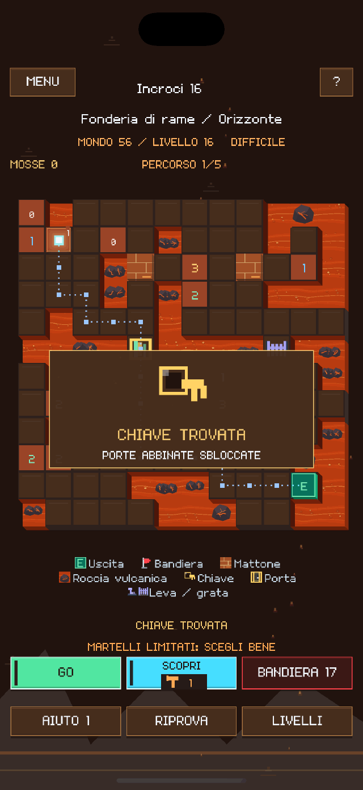
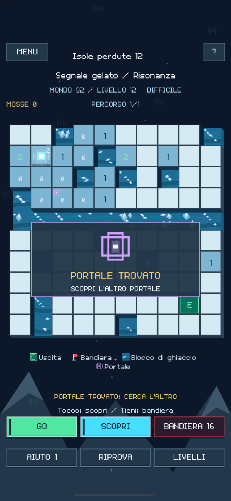
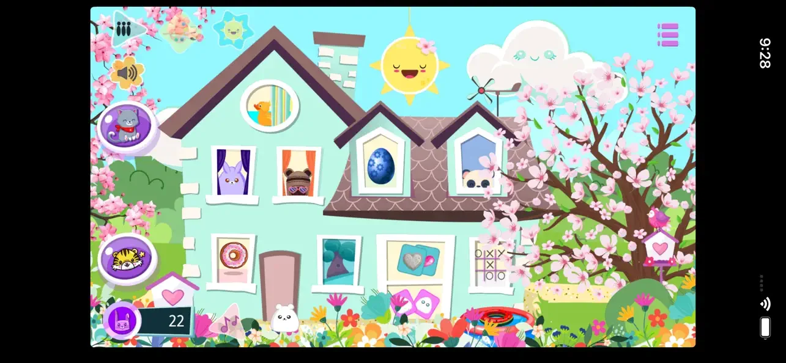

5 avventure punta e clicca
TinyStory
Eroi animali, isole colorate e misteri da risolvere. Scegli la tua storia tra le cinque avventure TinyStory.
iOS · Android · Computer, secondo il gioco
Scopri TinyStoryAnneMu’s Games · AML Creation
Scopri TinyStory e Celestwald: due serie di avventure punta e clicca con mondi colorati, personaggi indimenticabili e tanti enigmi.
Scopri tutti i giochi ↓5 avventure punta e clicca
Eroi animali, isole colorate e misteri da risolvere. Scegli la tua storia tra le cinque avventure TinyStory.
iOS · Android · Computer, secondo il gioco
Scopri TinyStory
2 avventure in un mondo incantato
Diventa apprendista alchimista, scopri l’Albero dei Sogni e prosegui il viaggio con i suoi semi magici. Esplora Celestwald 1 e 2.
iOS · Android · Steam e itch.io per il primo gioco
Scopri Celestwald 1 & 2✦ Nuovo su Android
Un campo minato dove ogni casella sicura diventa una strada.
Leggi gli indizi, segnala le mine e guida una piccola luce in mondi pieni di puzzle. 60 livelli gratuiti su Android.
iPhone e iPad, prossimamente



Altri mondi da scoprire
Personalizza il tuo Mochi o esplora i puzzle di tessere di Mahjong Castle.

Giochi kawaii e creativi
Crea un amico virtuale Mochi, vesti i piccoli peluche e decora le loro camere. Colleziona adesivi e divertiti con i mini-giochi. L’attività quotidiana Golden Cloud ti permette di ottenere Bunny Tokens gratuiti per il tuo mondo di peluche.
iOS · Android
Scopri Mochi Plush Kawaii
Puzzle e logica
Abbina le tessere libere ed esplora un castello magico in 240 livelli e 14 ambientazioni. L’anteprima gratuita comprende 30 livelli del giardino e quattro del ghiaccio. Completa il livello 30 del giardino per sbloccare gli schemi Classic illimitati. Su Android, con Adventure Pack opzionale acquistabile una sola volta.
Android
Scopri Mahjong CastleLa collezione

Avventure punta e clicca
Sei gattini, sei piccole avventure. Esplora il mondo di ogni gatto, raccogli oggetti e risolvi divertenti enigmi punta e clicca. Scopri storie diverse e scene colorate in Cats in the Box Adventure per iOS e Android.
iOS · Android
Scopri Cats in the Box Adventure
Avventure punta e clicca
Aiuta un piccolo eroe rosa a ritrovare i frammenti di un cristallo spezzato. Esplora 30 livelli nei mondi Green, Fire e Candy, raccogli oggetti e risolvi enigmi. Attenzione alle trappole lungo il cammino. Fantasiant unisce avventura e puzzle su mobile e itch.io.
iOS · Android · Windows · macOS · Linux
Scopri Fantasiant · Tiny Hero
Giochi kawaii e creativi
Vesti Lili e il suo orsacchiotto, poi decora la loro camera con mobili, colori e giocattoli. Dai spazio alla creatività e ritrova la stanza salvata. Lili’s Bedroom è un gioco di decorazione offline per iOS, senza pubblicità.
iOS
Scopri Lili’s Bedroom
Nuovo su Android
Un campo minato dove ogni casella sicura diventa una strada. Leggi gli indizi, segnala le mine e guida una piccola luce in mondi pieni di puzzle. 60 livelli gratuiti su Android.
Android · Google Play
Scopri Lumen Mine Gioca su Google Play Guarda lo Short
Puzzle e logica
Ricostruisci immagini colorate con 22 puzzle a incastro e 132 puzzle quadrati. Scegli la difficoltà che preferisci e riprendi i progressi salvati. Puzzles Mix offre due modi di giocare con le immagini su iOS.
iOS
Scopri Puzzles Mix
Puzzle e logica
Leggi gli indizi numerici, segna le mine nascoste e scegli ogni mossa con attenzione. Esplora 120 livelli in due mondi, con mine speciali e mosse limitate per nuove sfide. Little Minesweeper Guy porta su iOS puzzle colorati ispirati a Campo minato.
iOS
Scopri Little Minesweeper Guy
Ritmo e relax
Tocca quando il cerchio raggiunge l’arco luminoso, crea combo e scopri sfondi illustrati. Scegli il tranquillo Zen Mode o il più rapido Fast Mode. Esplora 10 mondi, di cui cinque gratuiti, con Premium opzionale tramite acquisto unico. Un gioco di ritmo per iPhone e iPad.
iOS
Scopri Zen Circle SpiritMochi Plush Kawaii · 2026
Crea il tuo Mochi, vesti i piccoli peluche, decora le camere e colleziona adesivi. Gioca ogni giorno con Golden Cloud per ottenere Bunny Tokens gratuiti.
Scopri Mochi
AML Creation · Suoni e momenti tranquilli
Combina pioggia, onde, camino e rumori di fondo per creare la tua atmosfera sonora. Regola ogni suono, imposta un timer e ascolta offline senza pubblicità. Somnifox è un’app sonora per iPhone e iPad, con funzioni gratuite e accesso Premium opzionale.
Scopri Somnifox ↗